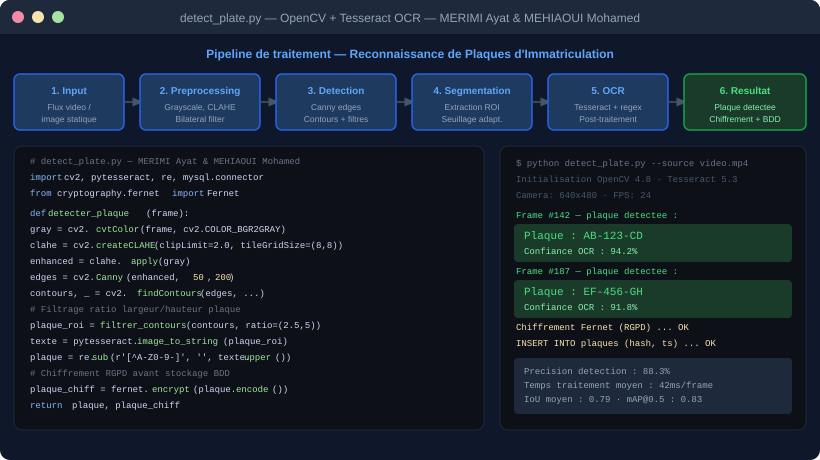
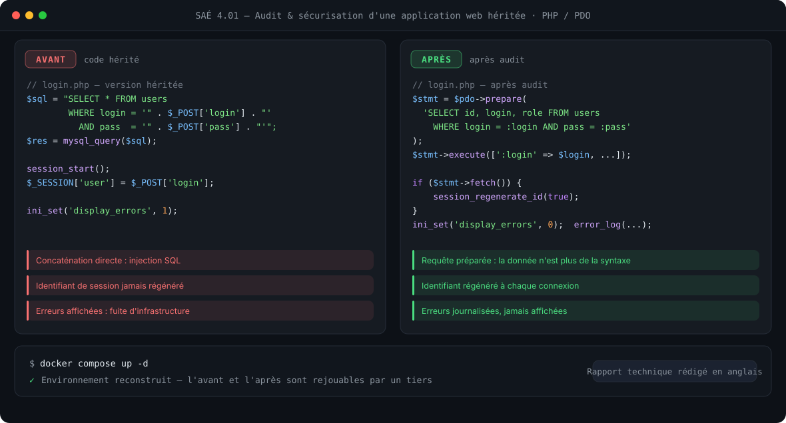
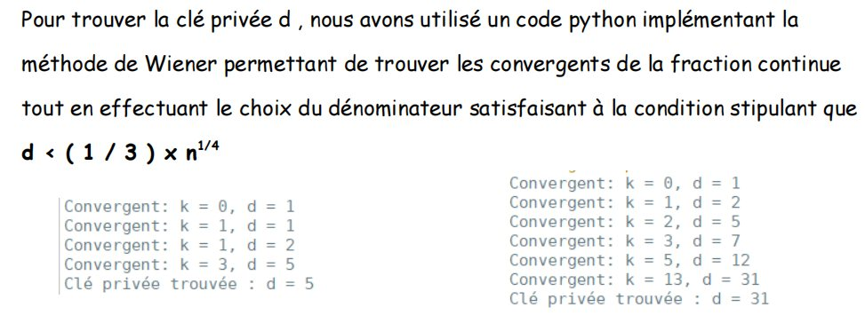
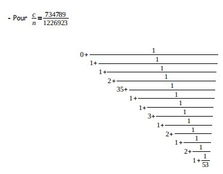
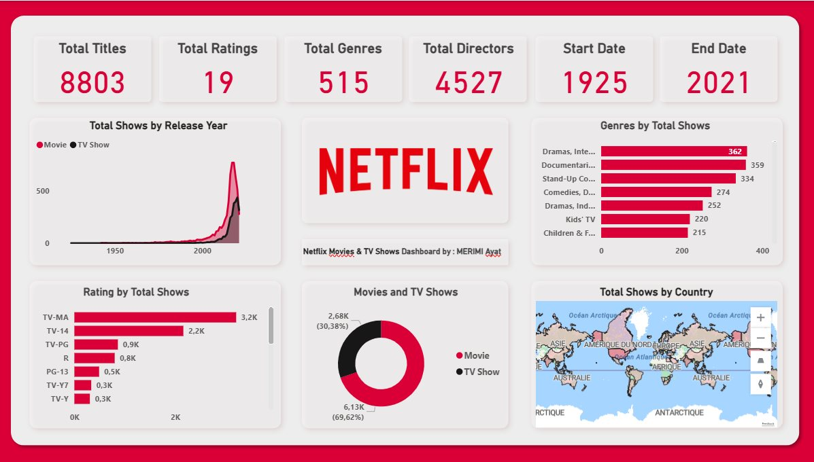

Injection
La plus ancienne, toujours la plus rencontrée.
Pilier 02
Faire voir une machine, c'est lui donner ce que personne ne lui a confié.
Un système qui lit des plaques d'immatriculation collecte des données personnelles, qu'on le veuille ou non. Je travaille exactement sur cette frontière : ce que la machine peut extraire, et ce qu'on a le droit d'en faire.
Projet phare
Détecter, extraire, puis protéger.
Détection et lecture automatique de plaques en conditions réelles — éclairage variable, angles obliques, occultations. Projet en binôme avec Mohamed Mehiaoui.
Une plaque est une donnée personnelle. Chiffrement Fernet avant insertion en base, accès restreint, conservation limitée dans le temps.
Une détection par modèle entraîné, avec l'heuristique conservée en repli : un modèle se trompe en silence, une heuristique échoue visiblement.
Chaîne de traitement d'image, post-traitement OCR, chiffrement et persistance. OpenCV 4.8, Tesseract 5.3, confiance OCR mesurée entre 91 et 94 %.

Audit
Reprendre du code qu'on n'a pas écrit, et le rendre défendable.
Audit puis correction d'une application web existante — projet d'équipe, rapport technique rédigé en anglais.
Un correctif qu'on ne peut pas rejouer n'est pas un correctif, c'est une affirmation. En livrant l'environnement avec le code, n'importe qui peut constater l'avant et l'après.
Rédigé en anglais, il décrit chaque vulnérabilité, son exploitation et son correctif.
Lire le rapport (PDF)

Cryptographie
Quand l'exposant privé est trop petit, la clé se retrouve toute seule.


L'attaque exploite une faiblesse de paramétrage, pas une faiblesse de RSA lui-même : si l'exposant privé est petit devant le module, il apparaît parmi les convergents du développement en fraction continue de e/n. On les teste un à un jusqu'à retrouver la factorisation. C'est le meilleur rappel que la cryptographie ne se casse presque jamais par les mathématiques — elle se casse par la mise en œuvre.
Sécurité applicative
Je connais ces failles parce que j'ai eu l'occasion de les écrire.
La plus ancienne, toujours la plus rencontrée.
Jetons sans expiration, algorithme laissé au client.
Masquer un bouton ne protège rien. La route doit refuser.
Chiffrement au repos, hachage salé, clés hors du dépôt.
En-têtes absents, erreurs bavardes, secrets versionnés.
Le RGPD comme contrainte d'architecture, pas comme case à cocher.
Un modèle a toujours tort une partie du temps.
Sur « Défiez-moi », un système de reconnaissance d'images, la vraie question n'était pas d'afficher une prédiction — c'était de rendre l'erreur utilisable.
Le retour utilisateur propose trois réponses, pas deux : « bravo », « non, c'est l'autre », et « ni l'un ni l'autre ». Sans cette troisième option, on force l'utilisateur à choisir entre deux réponses fausses — et on empoisonne les données qui serviront au réentraînement.
Chaque prédiction est archivée avec sa date, son retour et ses images. L'utilisateur peut auditer le système au lieu de le subir. C'est ma définition d'une IA acceptable.
La plupart des brèches sont une erreur de configuration.
Pas une technique inédite. C'est ce que je cherche en veille : la cause racine, pas le titre.
Données & analyse
Le travail se situe avant le graphique.

Nettoyage des valeurs manquantes et aberrantes, restructuration, jointures, puis visualisations croisées. Le vrai travail est en amont : comprendre pourquoi une colonne contient trois formats de date différents, et décider quoi faire des lignes qu'on ne peut pas sauver.
J'ai mené la même démarche sur un jeu de données de transactions immobilières.